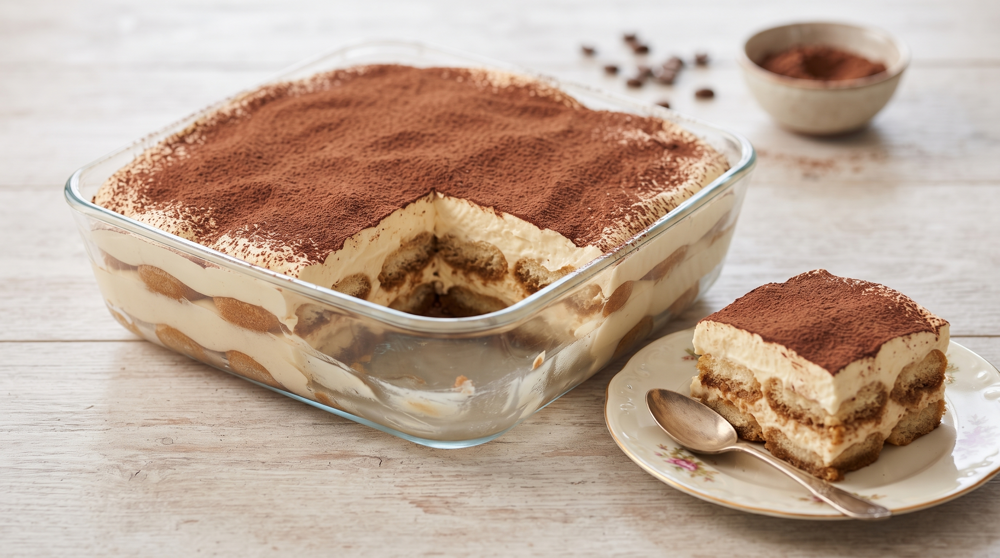
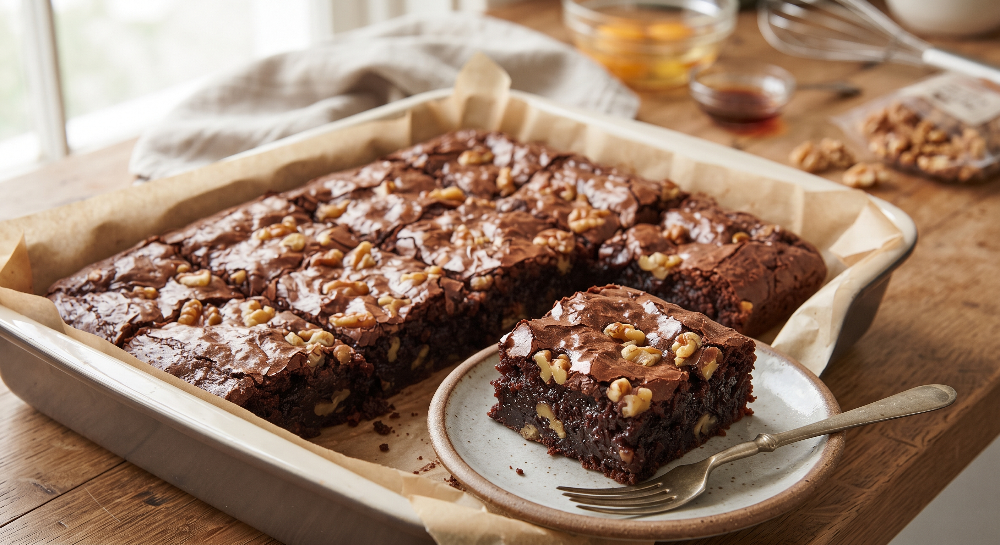

Precalentar el horno a 180°C. Enmantecar y enharinar un molde.
En un bol grande, batir los huevos con el azúcar hasta que estén espumosos. Agregar el aceite en forma de hilo mientras se sigue batiendo.
Incorporar la zanahoria rallada y mezclar bien.
Tamizar la harina junto con la canela y la nuez moscada. Agregar a la mezcla de huevos en dos partes, mezclando suavemente con espátula (no batir de más). Si usás nueces, agregarlas en este paso.
Verter la mezcla en el molde y hornear por 40-50 minutos o hasta que al pinchar con un palillo salga limpio. Dejar enfriar antes de desmoldar.
Frosting: Batir el queso crema con la manteca pomada hasta integrar. Agregar el azúcar impalpable y batir hasta obtener una crema suave. Cubrir la torta ya fría.
Tiramisú italiano

Ingredientes
300g de vainillas
3 yemas de huevo
100g de azúcar
250g de queso mascarpone
200ml de crema de leche
Café fuerte c/n
Cacao amargo
Pasos
Preparar café fuerte y dejarlo enfriar (le podés sumar un chorrito de licor si te gusta).
Batir las yemas con la mitad del azúcar hasta que queden espumosas y de un color más claro.
Integrar el queso mascarpone a las yemas batidas con movimientos suaves y envolventes.
En otro bol, batir la crema de leche con el resto del azúcar a medio punto y unirla a la crema anterior.
Sumergir rápidamente las vainillas en el café (¡cuidado que no se pasen de líquido!) y armar la primera capa en la fuente.
Cubrir con una capa generosa de la crema de mascarpone y repetir intercalando capas.
Llevar a la heladera por lo menos 4 horas (idealmente toda la noche) y espolvorear con abundante cacao amargo justo antes de llevar a la mesa.
Brownie Húmedo con Nueces

Ingredientes
200g de chocolate semiamargo
150g de manteca
1 taza de azúcar
3 huevos
1 cdita. de esencia de vainilla
3/4 taza de harina 0000
1/2 taza de nueces picadas
Pasos
Precalentar el horno a 180°C y enmantecar un molde rectangular (o forrarlo con papel manteca).
Fundir el chocolate junto con la manteca a baño maría o en el microondas a intervalos cortos.
Agregar el azúcar a la mezcla de chocolate y manteca tibia, integrando bien con un batidor de alambre.
Incorporar los huevos de a uno y la esencia de vainilla, batiendo suavemente después de cada adición.
Tamizar la harina e incorporarla con movimientos envolventes junto con las nueces picadas.
Verter la preparación en el molde y hornear durante 20 a 25 minutos. El secreto para que quede húmedo es que al pinchar con un palillo salga con algunas miguitas húmedas (¡nunca seco!). Dejar enfriar antes de cortar en cuadrados.